Samantha Cheng
Mass/mess
Window Gallery, 12 July - 9 August 2023
Mass/mess presents a collection of brooms for viewers to peruse
onsite at Window. This exhibition is a result of the efforts of
the artist to bring together variations of the humble broom in a
reframing of the object into an art context. Placed in this
installation, the objects become artefacts; they are relics of
the spaces they used to inhabit and function in. Within the
collection, they also come to represent the people and/or
institutions who have generously loaned them out to the artist.
Together, the individual objects create an installation that
considers the broom’s materiality and thing-power. The brooms
are in order and then out of order. Some have been interfered
with through visible ‘improvements’ and others have been
dismantled into the parts that make it whole.
*Images by the artist
Installation view, July 2023
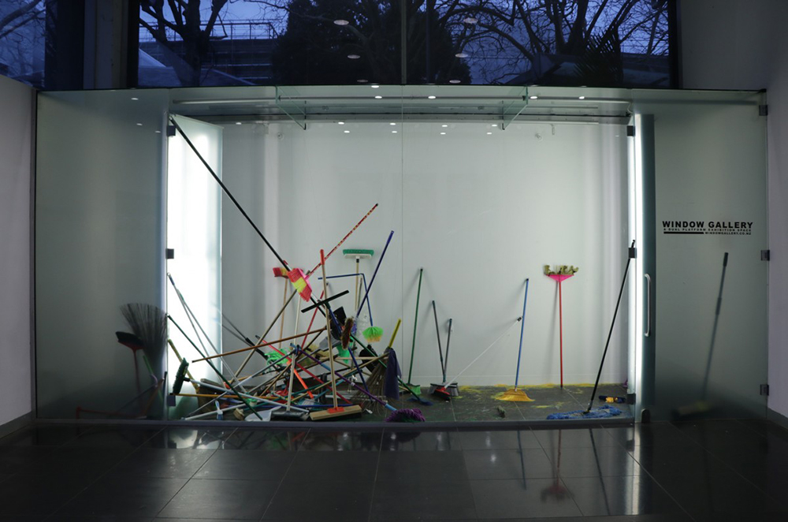
Installation view, July 2023
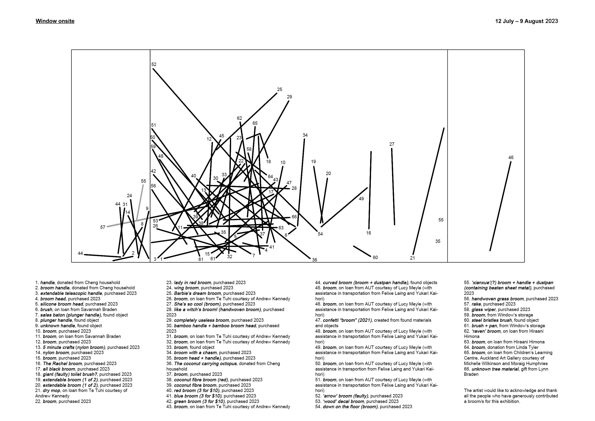
Installation guide and list of works, July 2023
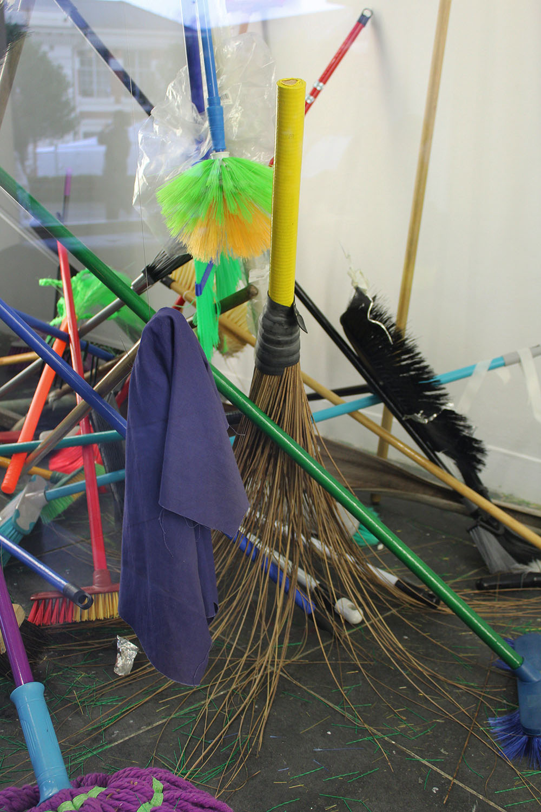
Installation view, July 2023
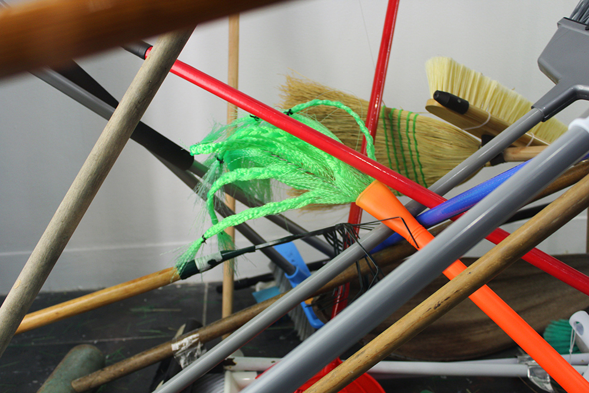
Installation view, July 2023
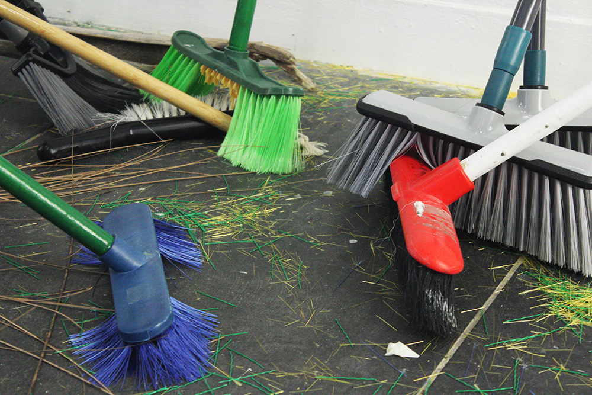
Installation view, July 2023
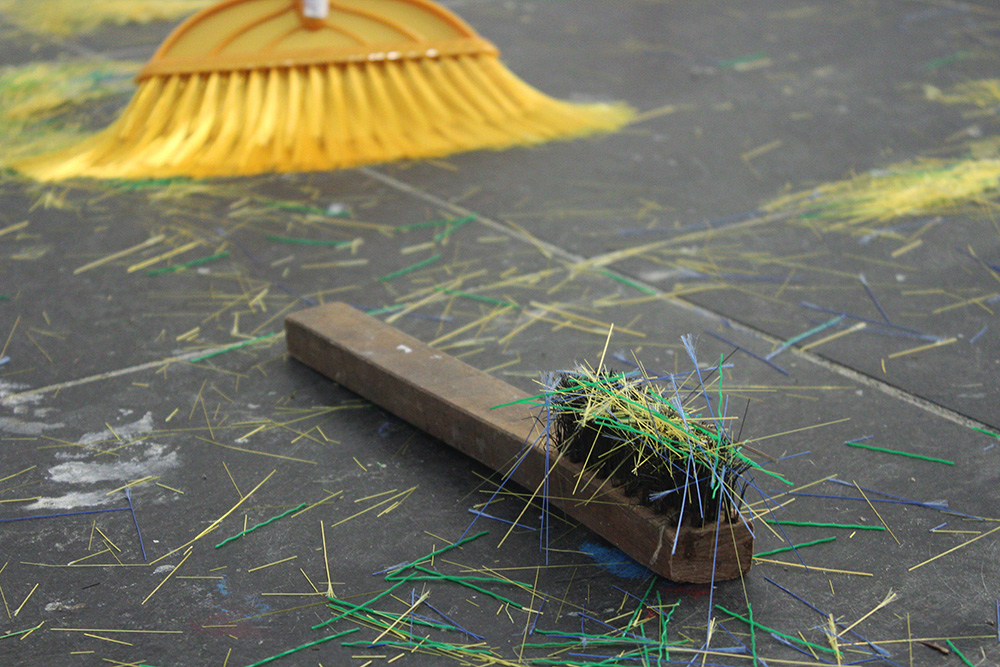
Details of The Rachel broom (16) and steel bristles brush (66), July 2023
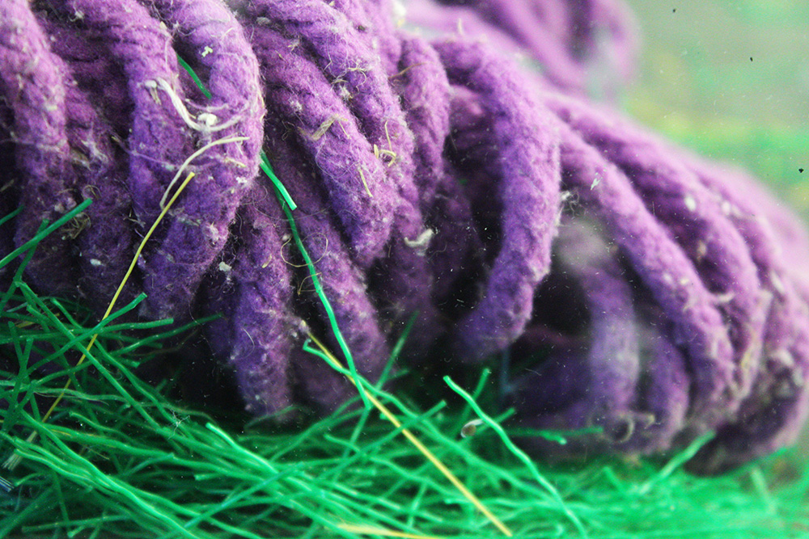
Details of The coconut carrying octopus (36), July 2023
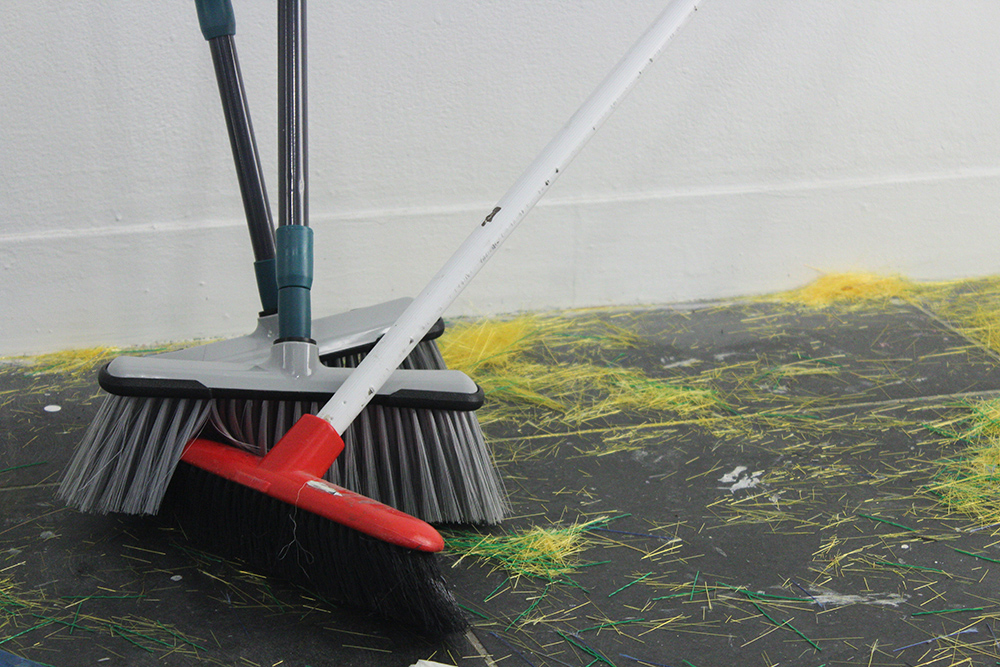
Installation view of extendable broom (1 of 2) (18), extendable broom (1 of 2) (19), and broom (49), July 2023
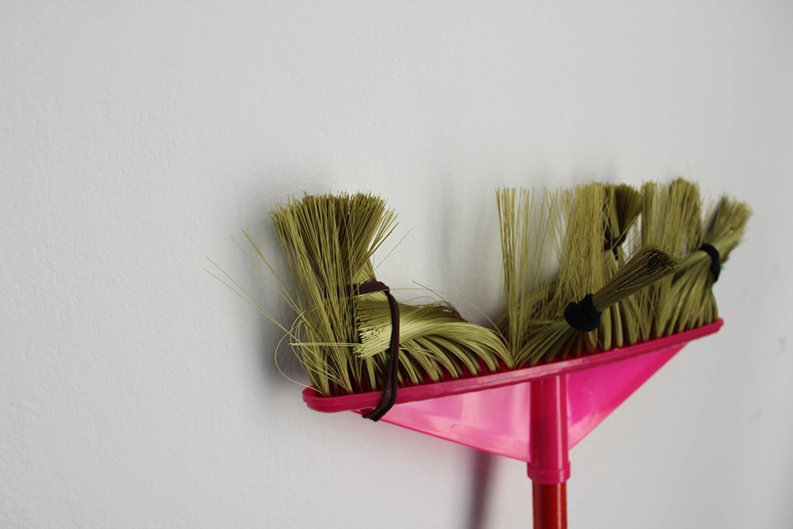
Detail of She’s so cool (broom) (27), July 2023
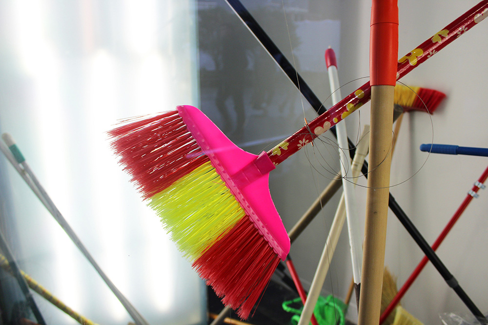
Detail of Barbie’s dream broom (25), July 2023
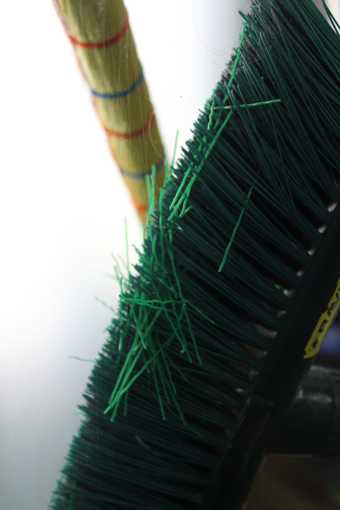
Detail of broom (26), July 2023
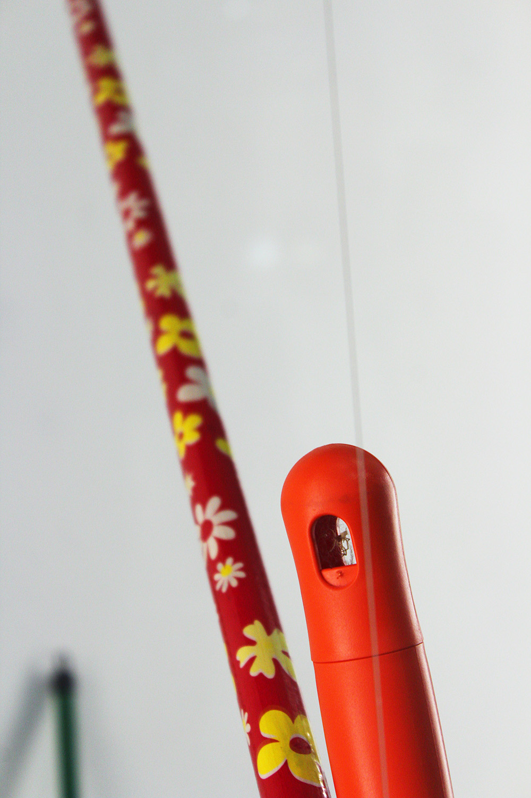
Detail of ‘raven’ broom (62) and Barbie’s dream broom (25), July 2023